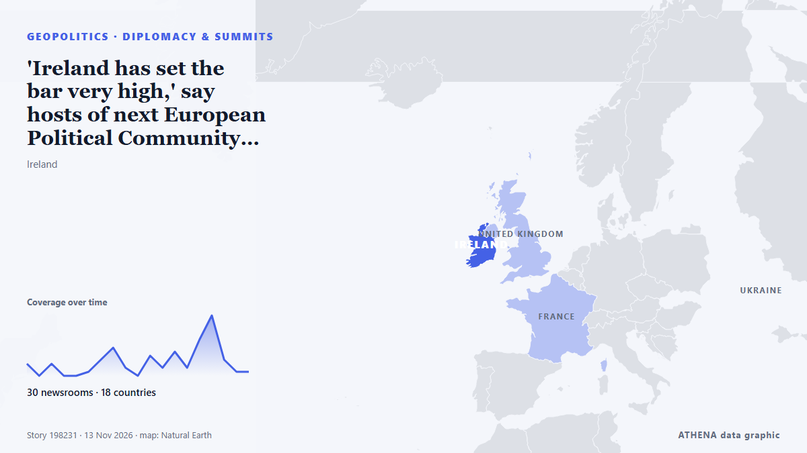

'Ireland has set the bar very high,' say hosts of next European Political Community summit

Around 50 leaders are expected in the capital for talks on European security, Ukraine and other shared challenges | follow for updates. from Irish Examiner
Reported independently by 31 outlets in 19 countries since 8 Nov, first by RTÉ News; coverage is fading. ATHENA rates the risk moderate (3.7/10), driven mainly by the severity of the harm described and its geographic and sector reach. Confidence is 87% (high), with 31 independent outlets corroborating it and an average source reliability of 74%. Outlets by country: Ireland (19), United Kingdom (8), Ukraine (2). Coverage: 8 Nov to 12 Nov, 88 hours.
Why it matters: Security and diplomatic developments can shift alliances, trade and markets well beyond the countries directly involved.
What changed: 12 new reports from 11 outlets in the 24 hours to 13 Nov.
First reported as: Ireland nowhere close to retrofitting targets - expert
How to read this page
- What you are reading
- 31 outlets in 19 countries reported this event. The reports below are listed in the order they appeared; each headline opens the original article. ATHENA writes none of the reports.
- Our reading
- For the record — The reports describe a completed, domestic, commercial or personal matter. We list it so you can see who reported it and when. We are not tracking a risk of wider conflict here.
- How much evidence
- Fair Several independent outlets agree, but the picture could still change.
After repeats, off-topic items and stale reports are removed, 15 of the 38 listed reports are counted; 68% of the headlines match the event.
About 27% of the headlines are analysis or opinion rather than straight reporting.
- What this does not mean
- ATHENA measures how an event is reported, not whether it is true. This is not a forecast, a judgement on who is right, or advice.
- What would change it
- Reports from other independent outlets showing a different development, or a firm confirmation or denial from an official source.
Reading R2 · refreshed with every update of this page. ATHENA has not yet published a track record for these readings; when it does, it will be linked here.
At a glance
Selected, scored and written by ATHENA's published methodology. No editor intervenes in individual events. How this is produced ›
| 08 Nov 14:43 UTC | 3 |
|---|---|
| 08 Nov 20:43 UTC | 0 |
| 09 Nov 02:43 UTC | 3 |
| 09 Nov 08:43 UTC | 0 |
| 09 Nov 14:43 UTC | 0 |
| 09 Nov 20:43 UTC | 1 |
| 10 Nov 02:43 UTC | 4 |
| 10 Nov 08:43 UTC | 7 |
| 10 Nov 14:43 UTC | 2 |
| 10 Nov 20:43 UTC | 0 |
| 11 Nov 02:43 UTC | 5 |
| 11 Nov 08:43 UTC | 2 |
| 11 Nov 14:43 UTC | 6 |
| 11 Nov 20:43 UTC | 2 |
| 12 Nov 02:43 UTC | 9 |
| 12 Nov 08:43 UTC | 15 |
| 12 Nov 14:43 UTC | 4 |
| 12 Nov 20:43 UTC | 1 |
| 13 Nov 02:43 UTC | 2 |
| 13 Nov 08:43 UTC | 2 |
| 11 Nov 23:51 UTC | 2.6 |
|---|---|
| 12 Nov 10:12 UTC | 3.9 |
| 13 Nov 12:29 UTC | 3.7 |
Why these numbers
Importance
Risk
Confidence
The reporting — who reported it, and when
headline as published · opens the original- RTÉ News · IrelandIreland nowhere close to retrofitting targets - expert
- The Irish News (Belfast) · United KingdomNo ‘one figure’ on united Ireland cost, Tánaiste says
- The Portugal News · PortugalIreland's pub culture: Last orders for the craic?
- Irish Mirror · IrelandNo 'one figure' on united Ireland, Tánaiste Simon Harris says
- Irish Independent · IrelandCian FitzGerald: With many of the world’s leaders in Dublin this week, has hybrid warfare now come to Ireland?
- The Irish News (Belfast) · United KingdomClaire Hanna: Journey to New Ireland as important as the destination
- Irish Examiner · Ireland'The history of Ireland is preserved on the backs of calves': Calligraphy expert Timothy O'Neill
- Irish Examiner · IrelandZelenskyy, Macron and other leaders expected to receive extra security at Dublin summit
- Belfast Telegraph · United KingdomLifelong loyalist and founder of Ulster Resistance says united Ireland now ‘inevitable’
- LNG Prime · CroatiaMolgas buys Prima LNG’s Irish business
- Bunkerspot ·Molgas completes purchase of Prima LNG’s Irish LNG business portfolio
- The Irish Times · IrelandSize of no-fly zone over Dublin increased for European summits
- Help Net Security · MaltaIRISSCON 2026 puts preparedness for cyberattacks and hybrid threats in focus
- TheJournal.ie · IrelandIreland hit with more bomb threats as security preparations ramp up for EU summit
- Belfast Telegraph · United KingdomTaoiseach and Tánaiste to meet to discuss Government approach to Irish unity
- Evening Standard (London) · United KingdomTaoiseach and Tánaiste to meet to discuss Government approach to Irish unity
- Euractiv · BelgiumEU farmers to stage rally during Dublin summit
- Belfast Telegraph · United KingdomSinn Féin surge post-Drumcree, unionists divided, and united Ireland gap closing
- RTÉ News · IrelandWhat is happening this week for Ireland's EU Presidency?
- Free Malaysia Today · MalaysiaIreland mounts its biggest security operation for European summits
- Irish Independent · IrelandEuropol leading international policing response to bomb hoaxes as major security operation gets under way in Dublin
- Irish Independent · IrelandSligo MP’s son-in-law’s journey from his honeymoon to the horrors of the Somme during World War One
- The Irish News (Belfast) · United KingdomUnited Ireland borrowing would burn through Republic’s €23 billion rainy-day funds within seven years, report finds
- RTÉ News · IrelandAgreement reached on EU Budget for 2027 - Tánaiste
- TheJournal.ie · IrelandAgreement reached for next year's EU budget in negotiations led by Simon Harris
- Ukrainska Pravda (English) · UkraineZelenskyy to meet Trump envoys in Dublin: We will coordinate positions and determine next steps
- Irish Independent · IrelandMajority of people in Ireland back ‘lifetime’ smoking ban for children
- Ukrainska Pravda (English) · UkraineZelenskyy and his team arrive in Ireland
- Al Jazeera English · Qatar‘Malign actors’: Ireland fears Russia could threaten undersea cables
- TASS (English) · RussiaEU leaders to consider assigning Russia negotiator at Dublin summit — media
- Belfast Telegraph · United KingdomSchools balancing difficult decisions as bomb threats causing headaches for police and principals in Northern Ireland
- RTÉ News · IrelandBehind The Story: Hybrid warfare, EU summits and pay deal
- TheJournal.ie · IrelandQUIZ: Can you name the European leaders invited to Ireland for this week's summit?
- The National Herald · United StatesWhat to Know as European Leaders Meet in Dublin to Discuss Ukraine’s Security, and Their Own
- Irish Mirror · IrelandEU leaders shamed for missing climate summit to attend Dublin gathering
- RTÉ News · Ireland50 leaders in Dublin for State's largest diplomatic event
- The Irish Times · IrelandCould Ireland’s food insecurity be solved with a basic income scheme for local growers?
- Irish Examiner · Ireland'Ireland has set the bar very high,' say hosts of next European Political Community summit